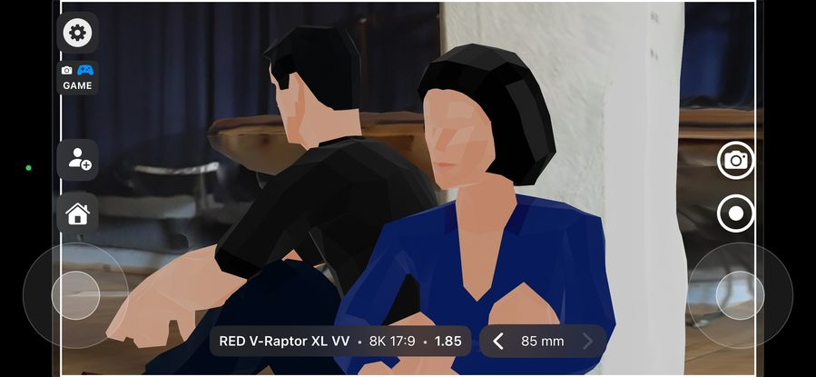
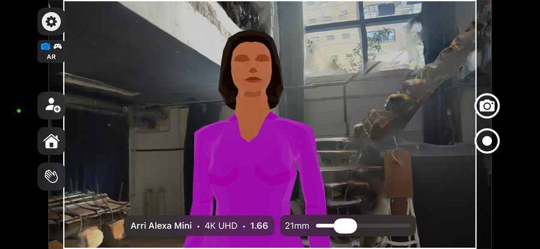
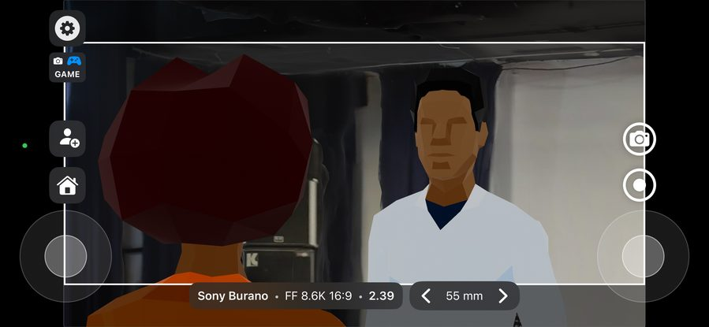

CINESTAGER
Be on set
before you're on set.
Place scanned 3D locations in AR, block scenes with mannequins, and test lenses — all before the crew arrives.



Place scanned 3D locations in AR, block scenes with mannequins, and test lenses — all before the crew arrives.



Use the built-in LiDAR scanner or apps like Polycam and Scaniverse to create a precise 3D model of your location. Import it directly into CineStager with one tap, or any USDZ model.
Choose from a comprehensive library of camera bodies and sensor formats. Configure prime or zoom lenses, set framelines, and save presets for your exact kit.
Choose from a range of mannequins in different poses. Adjust height, position and blocking. Use occlusion mode to place real actors inside your virtual location.
Every image capture automatically saves a top-down map showing camera position and actor placement for every shot. Share with your gaffer, AD and DP before day one.
From commercials to feature films — any production that needs to prep shots before stepping on set.
Show clients exactly what they'll get before the shoot day. Test compositions, blocking and lens choices in the actual location.
Compare focal lengths in your scanned location. See how a 25mm versus a 50mm frames the scene before you rent anything.
Use occlusion mode to block real actors inside a virtual location — ideal for complex moves or tight spaces.
Export top-down maps showing camera positions and actor placement. Your gaffer, AD, and DP are aligned before day one.
Scan once. Test endlessly from your living room. No need to return to answer "will this shot work?"
Fast turnaround, high visual ambition. Nail every setup in advance so you shoot confidently when the clock is ticking.
Designed by a filmmaker who needed it on set.
Switch between placing your scene in the real world or navigating freely in a virtual environment. Your setup stays intact.
Select your camera body, sensor format and framelines. Configure prime or zoom lenses and save custom presets for your kit.
Place mannequins in various poses and adjust height. Use occlusion mode to block real actors inside your virtual location.
Every image capture automatically saves a bird's-eye map showing camera position and actor placement.
Import scans from LiDAR, Polycam, Scaniverse or any photogrammetry app. Build a library of locations to reuse.
Built specifically for iOS. Previs in your pocket — on location, in the production office, or at home.
"Being able to walk through a scanned location and test lenses before the shoot day is a game changer for prep."
"CineStager changed the way I prep. I can walk through a location in AR, test every lens and block the scene before I've even spoken to the director. It's become an essential part of my kit."
"Finally a tool that lets me show my DP exactly what I see in my head. I can place actors, try different angles and walk through the scene together — all before we step on set."
Available now on the App Store. iPhone & iPad. Built by a filmmaker, for filmmakers.